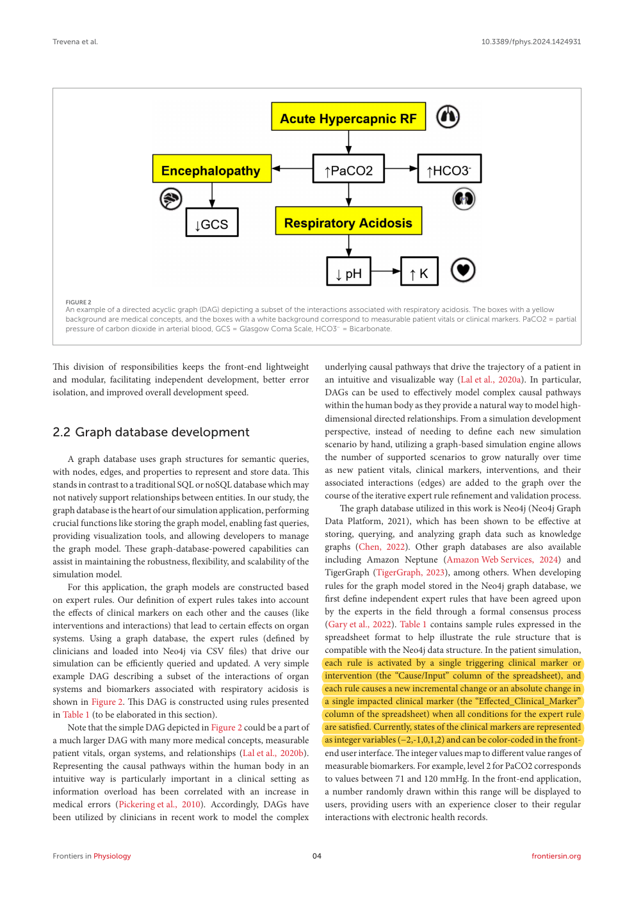
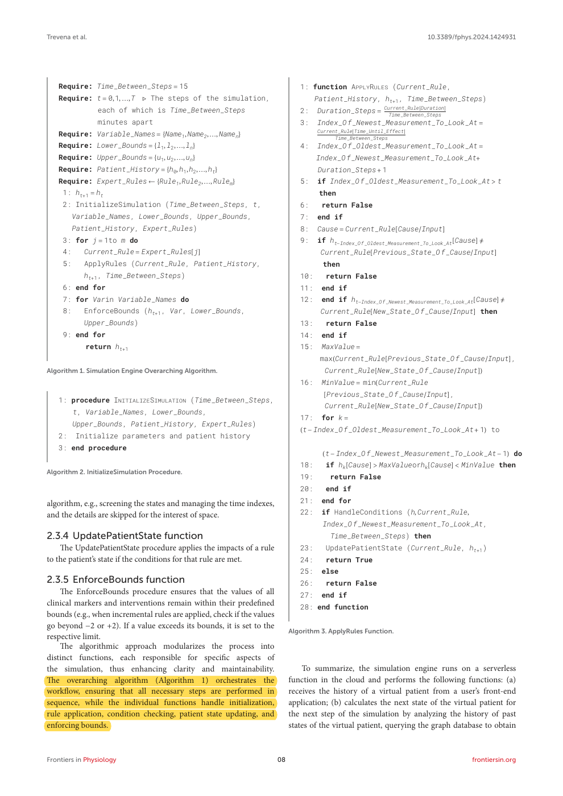
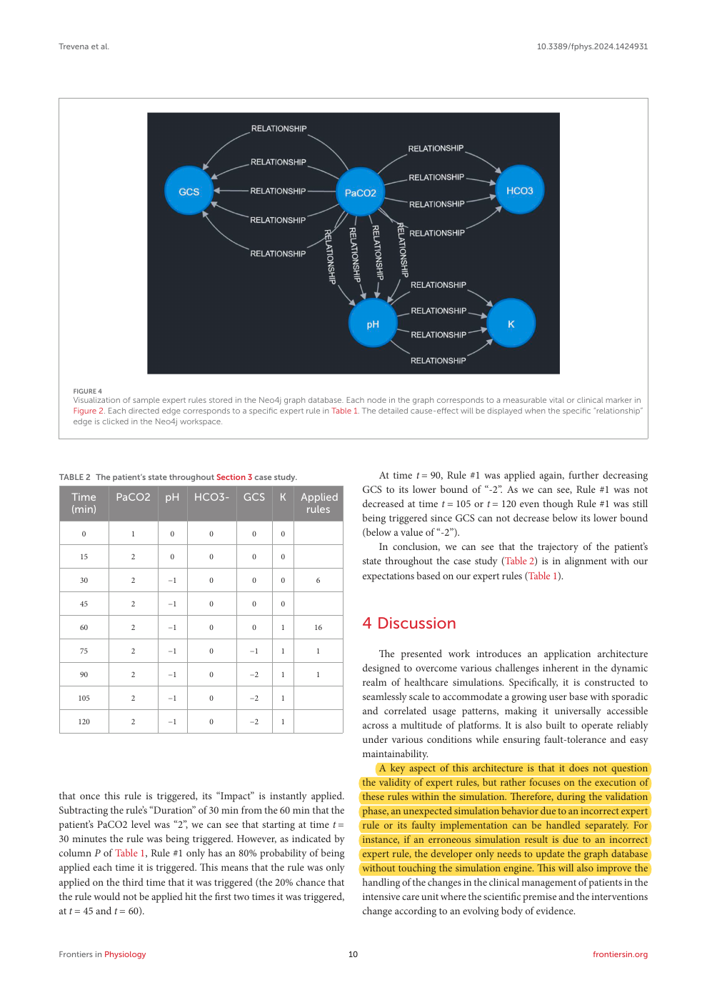

Expert graph-rule definition
Original PDF page 4. Clinical graph rules have conditions and defined state effects.
Open marked PDF at this pageOpen unaltered PDF at this pageOpen local marked screenshotPublisher source

William Trevena, Xiang Zhong, Amos Lal, Lucrezia Rovati, Edin Cubro, Yue Dong, Phillip Schulte, and Ognjen Gajic · 2024
Frontiers in Physiology, vol. 15, article 1424931
Can expert-defined graph relations drive a scalable simulation of a critically ill patient’s physiological trajectory?
The application combines a cross-platform interface, cloud simulation engine, and Neo4j expert-rule graph. Rules include triggering marker changes, duration, delayed effects, conditions, probability, and state bounds. Explicit procedures apply rules and update patient states. A short respiratory-acidosis case demonstrates the engine’s progression and the rules applied at each 15-minute step.
The worked case followed the prescribed expert-rule trajectory. The study presents architectural and algorithmic feasibility, not a controlled test of student performance or an LLM simulation/assessment comparison.
Its graph represents physiological effects, not disclosure permissions or rubric items. Some clinical effects are probabilistic, so the whole simulator is not deterministic in the sense proposed for confirmed grading rules. It does not validate a paired rule/evidence judge. The attachment’s claims about consistent conversational behavior and preserved interpretability during trainee dialogue are not directly tested.
This is an important prior example of executing clinical expert rules from a graph, including temporal conditions. It means DualGraph-OSCE should not claim to invent graph-based rule execution or patient-state tracking. The specific contribution is instead using one provenance- and delivery-aware evidence state to execute separate role permissions and assessment requirements, preserving their event-linked consequences. The paper also makes a valuable engineering distinction: a wrong clinical rule and a wrongly implemented rule are different errors.
Related work: clinical graph-driven simulations and temporal expert rules. Method: explain the separation between faculty-confirmed rule content and executable engine logic. Discussion: state what is added beyond existing rule-driven patient-state simulations.
This is a proposed paraphrase for our manuscript, not a quotation from the source and not a reported result of DualGraph-OSCE.
Page numbers refer to the physical pages of the unaltered publisher PDF. Yellow marks identify the cited text; the whole page is shown so its context remains visible.
Original PDF page 4. Clinical graph rules have conditions and defined state effects.

Original PDF page 8. Rule application, conditions, state updates, and bounds are separate procedures.

Original PDF page 10. The architecture separates rule-content validation from execution errors.
